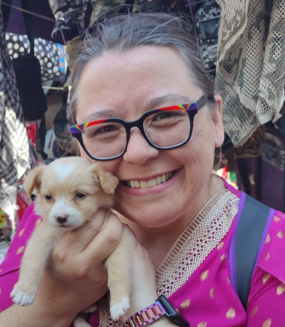
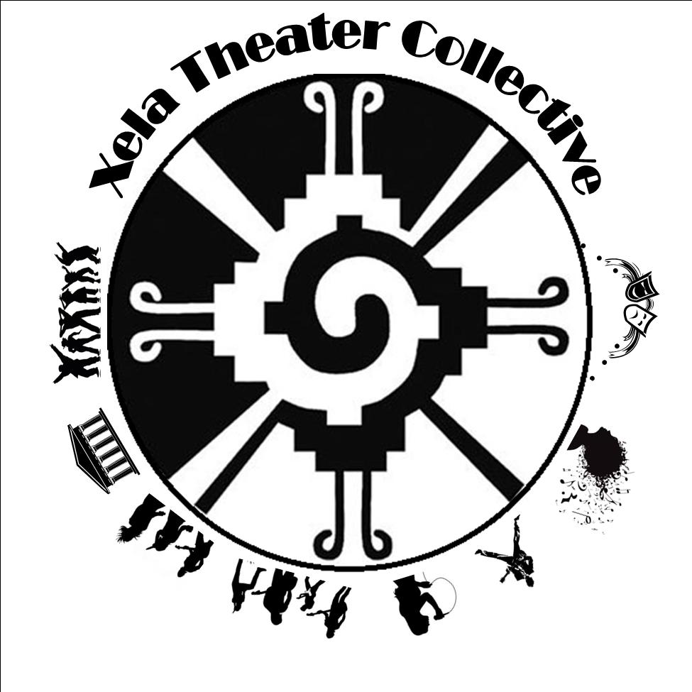

Rue Orford
UX Designer
Summary
Experienced in cross-cultural communication and community outreach, with a background in project management, event planning, and digital archives. Skilled in metadata creation, quality control, and digital preservation. Passionate about supporting refugees and immigrants, demonstrated through volunteer work and non-profit involvement. Adept at organizing successful events, promoting brands, and coordinating with diverse groups to achieve project goals.
Education
Work experience

Volunteer Soft Landing, Missoula
Jun 2021 - May 2022
As a volunteer with a non-profit organization focused on establishing refugees within the Missoula community, I worked closely with Afghan refugees to help them obtain their drivers' licenses. This involved providing drivers education and rules of the road for the state of Montana, as well as ensuring that they had the correct paperwork when getting permits and licenses.

Archive Assistant Endangered Language Archive, London
Feb 2015 - Jan 2016
As an Archives Assistant, I utilized my analytical skills to organize and collate metadata and deposits for upload to the archive. Through my work, I gained valuable skills and experience in working with large data sets.

Volunteer Sylheti Project,
LondonOct 2014 - May 2016
As a volunteer, I worked closely with the Sylheti diasporic community in London to organize a Community/Academic Event aimed at increasing awareness of Sylheti as a language. In addition, I aided in dictionary building, consultant work, storybook creation, dictionary app creation, cultural story videos, and community outreach, serving as the program manager for storybook creation.

Summer Intern UNESCO HQ, Paris
Jun 2015 - Aug 2015
As a summer intern for UNESCO, I played a key role in the reimaging of the World Atlas of Languages, working alongside the Programme Specialist to bring new life to this important resource. In addition, I had the opportunity to draft proposals, welcome letters, and speeches, honing my skills in written communication. I also assisted with an expert conference, gaining valuable experience in event planning and coordination. Through my work with UNESCO, I was able to deepen my understanding of the organization's mandate and programs, while enhancing my academic and technical knowledge through practical assignments.

Project Manager Chocolate and Bicycles Media, Missoula
Jan 2012 - Dec 2014
As a project manager and editor of a self-published children's book, I utilized my skills in editing, promotion, and marketing to successfully launch 'How Ice Cream Saved Missoula'. I organized events, book readings, and book signings, created marketing materials, and spoke with retailers to carry the book. Additionally, I facilitated the printing of the book, listed it with resellers, and served as the program manager for storybook creation. Through my work, I gained valuable experience in project management, event planning, and cross-functional collaboration, as well as expertise in book promotion and marketing.

Event Coordinator UM Lingusitics Club, Missoula
Sept 2012 - May 2014
As an events coordinator for the Linguistics Club, I was responsible for organizing and publicizing linguistic events for the club and students at large. I coordinated a lecture series with renowned linguists such as Roger Shuy, Nathaniel B. Levtow, Gary Bevington, K. David Harrison, and Michael Olsen. Additionally, I organized movie nights to promote linguistics to the university as a whole. Through my work, I gained valuable experience in event planning, project management, and cross-functional collaboration, as well as expertise in marketing and promotion. These skills make me a valuable addition to any team looking to organize successful events and promote their brand or product.

Program Director, CEO Xela Theater Collective, Missoula
Jan 2012 - June 2012
As a project creator and researcher, I organized fundraising events to provide art-based workshops for the children of Quetzaltenango, Guatemala. I coordinated with local groups to have locals facilitate the workshops, gaining valuable experience in project management, event planning, and cross-cultural collaboration. Through my work, I developed expertise in fundraising and community outreach, as well as a deep appreciation for the power of art to inspire and empower young people. These skills make me a valuable addition to any team looking to create meaningful projects and events that benefit communities in need.As a project creator and researcher, I organized fundraising events to provide art-based workshops for the children of Quetzaltenango, Guatemala. I coordinated with local groups to have locals facilitate the workshops, gaining valuable experience in project management, event planning, and cross-cultural collaboration. Through my work, I developed expertise in fundraising and community outreach, as well as a deep appreciation for the power of art to inspire and empower young people. These skills make me a valuable addition to any team looking to create meaningful projects and events that benefit communities in need.

Research Volunteer Living Tongues Institute for Endangered Languages
Jan 2011 - Dec 2011
As an online researcher, I scoured the internet to find resources for endangered languages, including platforms such as YouTube, Facebook, and other social media. I provided quality control on other researchers' findings to maintain the database, gaining valuable experience in data management and research methodology. Through my work, I developed expertise in online research and data analysis, as well as a deep appreciation for the importance of preserving endangered languages. These skills make me a valuable addition to any team looking to conduct research and manage data in an online environment.
Skills
Honors and Awards
Fun Stuff